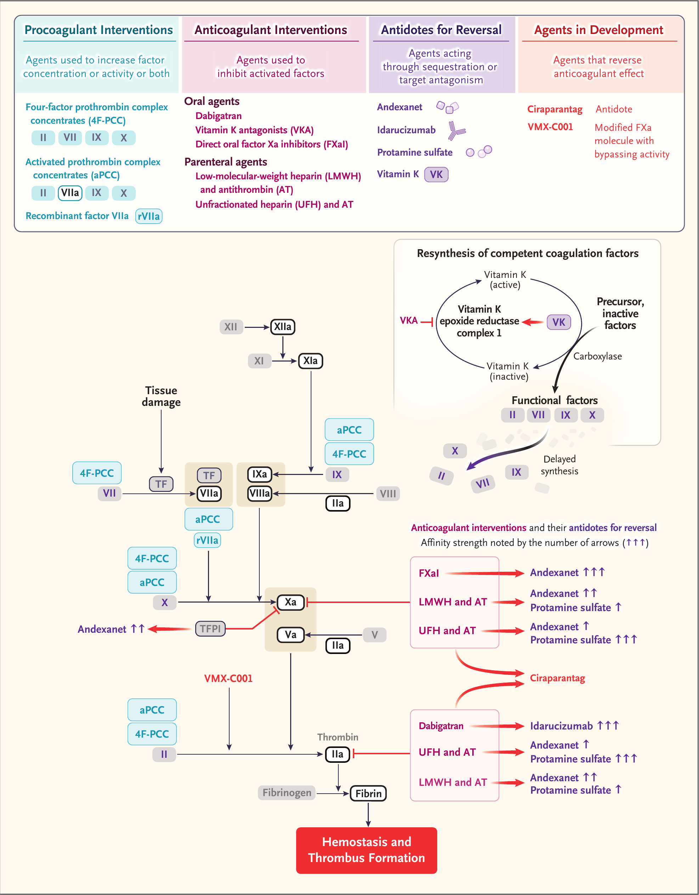
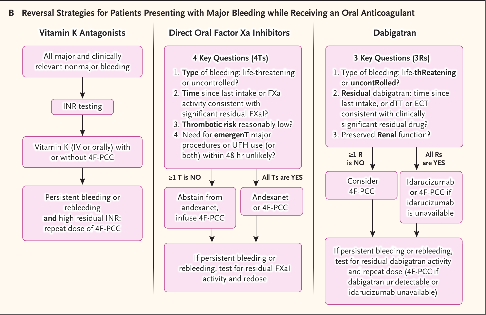
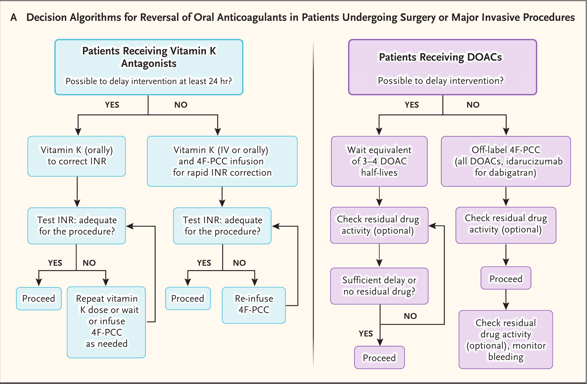

#2 CARDIOVASCULAR SYSTEM / 抗血小板・凝固薬
| UFH | Unfractionated Heparin — 未分画ヘパリン |
| LMWH | Low-Molecular-Weight Heparin — 低分子ヘパリン |
| DOAC | Direct Oral Anticoagulant — 直接経口抗凝固薬 |
| FXaI | Factor Xa Inhibitor — 第Xa因子阻害薬（リバーロキサバン・アピキサバン・エドキサバン等） |
| VKA | Vitamin K Antagonist — ビタミンK拮抗薬（ワルファリン等） |
| PCC | Prothrombin Complex Concentrate — プロトロンビン複合体製剤 |
| 4F-PCC / 3F-PCC | 4因子／3因子 PCC（4F は第II・VII・IX・X、3F は第VIIが少ない） |
| aPCC | Activated PCC — 活性化プロトロンビン複合体製剤（FVIIaを含む） |
| rFVIIa | Recombinant Factor VIIa — 遺伝子組換え活性化第VII因子 |
| FFP | Fresh-Frozen Plasma — 新鮮凍結血漿 |
| INR | International Normalized Ratio — プロトロンビン時間国際標準比 |
| aPTT | Activated Partial-Thromboplastin Time — 活性化部分トロンボプラスチン時間 |
| ACT | Activated Clotting Time — 活性化凝固時間 |
| ECT | Ecarin Clotting Time — エカリン凝固時間（ダビガトラン残存量の指標） |
| dTT | dilute Thrombin Time — 希釈トロンビン時間（ダビガトラン残存量の指標） |
| 抗FXa活性 | anti-Factor Xa activity — 第Xa因子阻害活性（ヘパリン・FXaI残存量の指標） |
| TFPI | Tissue Factor Pathway Inhibitor — 組織因子経路インヒビター |
| AT | Antithrombin — アンチトロンビン |
| HIT | Heparin-Induced Thrombocytopenia — ヘパリン起因性血小板減少症 |
| DIC | Disseminated Intravascular Coagulation — 播種性血管内凝固 |
| ICH | Intracranial Hemorrhage — 頭蓋内出血 |
| TEE | Thromboembolic Event — 血栓塞栓イベント |
| VTE | Venous Thromboembolism — 静脈血栓塞栓症 |
| EMA / FDA | 欧州医薬品庁／米国食品医薬品局 |
| ISTH | International Society on Thrombosis and Haemostasis — 国際血栓止血学会 |
| RCT | Randomized Controlled Trial — 無作為化比較試験 |
| OR / RR / HR | Odds Ratio／Relative Risk／Hazard Ratio — オッズ比／相対リスク／ハザード比 |
| CI | Confidence Interval — 信頼区間 |
| Vd | Volume of distribution — 分布容積 |
| Kd | Dissociation constant — 解離定数（小さいほど結合が強い） |
経口抗凝固薬の使用はこの数十年で大幅に増加した。心房細動における塞栓性脳卒中の予防と、静脈血栓塞栓症（VTE）の治療・予防がその主な原動力である。世界の心房細動有病者数は2010年の3,350万人から2019年には5,900万人超へとほぼ倍増し、さらなる増加が見込まれている。未分画ヘパリン（UFH）などの非経口抗凝固薬も、侵襲的な循環器手技や人工心肺手術の拡大に伴って使用が増えている。
抗凝固薬は確立した抗血栓効果をもつ一方で、すべてが本質的に出血リスクを伴う。心房細動の大規模試験・レジストリでは、大出血イベントの発生率は経口抗凝固薬全体で100患者・年あたり1.4〜6件に及ぶ。とりわけ抗凝固薬関連の頭蓋内出血（ICH）は死亡・障害をもたらす最も重篤な出血で、全ICHの最大25%を占め、非抗凝固薬関連のICHより予後が悪い。
頭蓋内出血の発生率は、DOAC でおよそ100人・年あたり0.3件、ビタミンK拮抗薬（VKA）でおよそ100患者・年あたり0.8件である。大出血リスクは抗凝固薬の種類にかかわらず、加齢・腎/肝障害・フレイル・多剤併用とともに上昇する。抗凝固薬の使用拡大に伴い、薬物的介入を要する大出血の絶対数は増加しており、大出血・緊急手術・高リスク手技に対する迅速かつ効果的な薬物的リバースが重要であり続けている。
リバース戦略は、抗凝固薬と拮抗薬それぞれの薬力学的・薬物動態学的特性、規制上の適応、エビデンスの質、患者個別因子、利用可能性に基づいて選択すべきである。拮抗薬は作用原理によって2つに大別される。
4因子PCC（4F-PCC）は、ビタミンK依存性凝固因子（第II・VII・IX・X因子）を補充して凝固を回復させる。aPCC は活性化型の第VII因子（FVIIa）を含み、組織因子依存性に第X・IX因子を直接活性化するバイパス活性をもち、トロンビンの急速な生成を引き起こす。rFVIIa も類似のバイパス活性をもつ。
抗凝固薬は、それぞれの凝固標的と特異的拮抗薬に対して異なる競合的親和性をもつ。ビタミンKは VKORC1 結合部位を VKA と競合し、健全な凝固因子の段階的再合成と INR の補正を可能にする。直接FXa阻害薬はFXa よりもアンデキサネットへの親和性が高い。ダビガトランはトロンビンよりもイダルシズマブへの親和性が高い。UFH はプロタミン硫酸に対して非常に高い化学的親和性をもつ一方、LMWH の親和性は低い。

原著 Table 1 から、研修医・ICU 医が押さえるべき用量・半減期・適応・主なリスクを抜粋した。数値はすべて原著記載値。
| 拮抗薬 | 対象 | 用量・動態 | 適応・主なリスク |
|---|---|---|---|
| プロタミン硫酸 | UFH LMWHは部分中和 |
UFH 100 IU あたり ≤1 mg（比は1:1を超えない）。半減期5〜7分、発現<5分。緩徐静注。 | FDA/EMA で UFH 中和に承認。妊娠時も安全。リスク：低血圧・肺高血圧・アナフィラキシー・（<0.1%）致死的心室性不整脈。 |
| ビタミンK₁ | VKA | 静注 5〜10 mg または経口 1〜10 mg（INR依存）。半減期約2時間。発現は凝固因子再合成に依存。 | VKA関連出血・高INRに承認。妊娠時も安全。重症出血では静注が経口より速い。 |
| イダルシズマブ | ダビガトラン | 静注 5 g（2×2.5 g ボーラス）。半減期約10時間、発現<5分。腎排泄。 | FDA/EMA で大出血・術前に承認。固有の血栓原性は明らかでない。遅発性ダビガトランリバウンド（24時間〜）。妊娠時は非推奨。 |
| アンデキサネット アルファ |
直接FXaI LMWH/AT間接FXaI |
静注 5 g（2×2.5 g ボーラス）＋2時間持続。半減期約4〜7時間、発現≤5分。 | 米国市場から撤退（2025/12/22）。EMA はアピキサバン・リバーロキサバンのみ条件付き承認。血栓リスク・周術期警告。妊娠時は回避。 |
| 4F-PCC | VKA（承認） 全DOAC（適応外） |
承認用量 25〜50 FIX IU/kg（最大5000 IU）、INRで調整。INR補正は30分以内に検出。 | VKA リバースで唯一承認。高用量で血栓リスク。一部製剤は少量のUFHを含む（HIT・DIC で注意）。妊娠時は回避。 |
| aPCC | 全抗凝固薬 適応外 |
FVIIa を含むバイパス製剤。第二選択。 | 適応外・第二選択。高い血栓リスク（特に >200 IU/kg/日）。妊娠時は回避。 |
| rFVIIa | 全抗凝固薬 適応外 |
適応外用量 ≤90 μg/kg。発現は数分以内。 | 高い動脈血栓リスクのため、経口抗凝固薬関連出血では回避すべき。超生理的なFVIIa高値が原因。 |
高度に陽イオン性のプロタミン硫酸ペプチドは、陰イオン性の UFH 混合物を中和する。人工心肺手術・血管手技など出血リスクの高い状況で広く用いられる。LMWH は不完全に中和（主に抗トロンビン活性を標的）し、フォンダパリヌクス・ダナパロイドには無効である。
静注プロタミンの用量は投与された UFH の量とタイミングに従って決め、プロタミン：UFH 比は 1:1 を超えない（UFH 100 IU あたり ≤1 mg）。過量のプロタミンは逆説的に止血を障害し、出血と輸血量を増やしうる。プロタミン用量を負荷量に基づくか、総量（負荷＋術中）に基づくかは議論が続いている。固定用量レジメンは使用を簡便化し有効性・安全性を改善しうるが、確定的なエビデンスは不足している。
プロタミン投与後の UFH 中和の十分性の評価は依然として困難である。手技関連の凝固障害、併存疾患、プロタミン自体の抗凝固作用が各種アッセイに影響する。クロモジェニック抗FXaアッセイが残存 UFH 活性を最も正確に定量するが、ルーチンには利用できない。日常的に使う aPTT と ACT はそれぞれ低レベル・高レベルの UFH を検出するが相関は不良で、ACT は機器間でも一致が悪い。
プロタミン投与後の数時間に、遊離 UFH が再出現するヘパリンリバウンドが起こりうる（典型的には抗FXa活性 <0.2 IU/mL で ACT では検出されない）が、臨床的意義と対応は不明確である。POC 全血アッセイ（プロタミン滴定・粘弾性検査）は低レベルの UFH 活性を正確に検出できるが、アウトカム妥当性を欠く。
プロタミン関連の血行動態有害事象は比較的多く、直接毒性・免疫介在性機序（またはその両方）から生じる。末梢静脈からの緩徐投与でリスクを減らせる。リスク因子には精管切除歴（抗精子抗体）、魚アレルギー（エビデンスは限定的）、プロタミン含有インスリンへの曝露がある。
プロタミン（例：アレルギー既往）や UFH（例：HIT）に明確な禁忌がある場合、心臓手術では半減期の短さからアルガトロバンよりビバリルジンが好まれる代替となるが、特異的拮抗薬はない。人工心肺離脱後にビバリルジン濃度を下げるため修正限外濾過が用いられてきた。必要なら適応外の PCC を用いることもある。
未解決の課題：LMWH・フォンダパリヌクス・ダナパロイドに対する拮抗薬は依然として満たされない治療ニーズである。
アンデキサネットは、直接FXa阻害薬とアンチトロンビン依存性の間接FXa阻害薬を中和するよう設計された、組換え不活性型 FXa デコイである。アンデキサネットは組織因子経路インヒビター（TFPI）も最大14.5時間阻害し、TFPI 値は投与後72時間以内にベースラインへ戻る。
この TFPI 抑制は一過性にトロンビン生成を高め、前血栓状態を持続させうる。これは ANNEXA-4 試験の163例で、プロトロンビンフラグメント1+2 と D-ダイマーの一過性のベースライン超過上昇、投与直後の内因性トロンビンポテンシャルのほぼ倍増として反映された。すなわち、止血を回復させることと血栓を惹起することが密接に結びついている。
単群の ANNEXA-4 試験では、リバーロキサバン・アピキサバン・エドキサバン・エノキサパリンに関連した大出血の352例にアンデキサネットが投与された。ボーラス後の抗FXa活性は、直接FXa阻害薬投与例（234例、うちエドキサバン10例）で92%低下、エノキサパリン投与例（16例）で75%低下した。
DOAC投与例の多くで、注入完了から4時間以内に部分的なFXa阻害薬リバウンドが生じ、抗FXa活性はアピキサバンで32%・リバーロキサバンで42%阻害されたまま残存した。これはアンデキサネット–DOAC 複合体の解離と、アンデキサネットの半減期が各FXa阻害薬より短いことを反映する。12時間時点で82%の患者が良好または優秀な止血を得た。
30日死亡率は14%（49例）、大血栓イベントの発生率は10%（34例）で、その大半は投与後14日以内に生じた。比較対照の欠如・少数例・短い追跡が結果の解釈を制限する。
ANNEXA-I 試験では、FXa阻害薬関連 ICH の452例が、アンデキサネットまたは標準ケア（85.5%が PCC）に割り付けられた。試験は最初の中間解析（最初の450例登録後に事前規定）で、主要評価項目の P=0.031 という事前規定基準に基づき早期中止された。
アンデキサネットは12時間時点で標準ケアより優れた止血効果を示した（補正後差 13.4 パーセントポイント；95% CI 4.6〜22.2；P=0.003）。これは主に血腫量35%以下への減少によって駆動された。しかし大きな血腫（≥12.5 mL）の増大、30日の神経学的悪化、死亡率は両群で同等であった。一方、血栓イベント（大半は虚血性脳卒中）の発生率はアンデキサネットでほぼ2倍であった（10.3% vs 5.6%；P=0.048）。
投与直後の内因性トロンビンポテンシャル上昇と抗FXa活性低下は、血腫増大の抑制と血栓増加の両方に関連しており、止血回復と血栓惹起の密接な関係を示唆する。長期アウトカムは収集されていない。止血効果の優位性にもかかわらず、大血腫・死亡への中立的効果と、観察研究で一貫して報告される高い血栓リスクが懸念を呼ぶ。
2025年12月22日付で、アンデキサネットは FDA が提起した安全性懸念により米国市場から自主的に撤退した。EMA では追加モニタリングを条件に、アピキサバンとリバーロキサバンのリバースに限り（エドキサバン・LMWH・フォンダパリヌクスは対象外）、重大な制御不能・生命を脅かす出血に対して条件付き承認を保持している。
ANNEXA-4・ANNEXA-I のいずれも緊急手術を受ける患者を含んでおらず、アンデキサネットは周術期使用が承認されておらず、心臓手術への警告がある。アンチトロンビン–UFH 複合体に結合することで一過性の UFH 抵抗性を誘発し、周術期の UFH 管理を著しく複雑にし、人工心肺中の回路血栓（生命を脅かす）と関連する。UFH 増量や予防的アンチトロンビン補充で抵抗性を克服しうるが、臨床的検証は不足している。
アンデキサネットは、市販のクロモジェニック抗FXaアッセイに添加された外因性 FXa と干渉するため、投与後のモニタリングは再出血時の意思決定の信頼できる支えにならない。粘弾性検査や新しい POC アッセイは有望だが検証を欠く。可能なら投与前に抗FXa値を測定することが適切な使用の指針になりうる。
実践的結論：血栓原性・モニタリング不能・長期効果の不確実性・規制上の懸念・高コストを踏まえ、アンデキサネットは承認適応（生命を脅かす／制御不能な出血で、迅速なリバースがリスクを上回り、手術が予定されない場合）に厳格に従い、選択された患者にのみ用いるべきである。PCC との併用は理論的な相加的血栓原性のため避ける。
イダルシズマブは、ダビガトランを軽鎖–重鎖の界面で選択的に結合するヒト化モノクローナル抗体フラグメントである。前臨床・第1相試験では固有の凝固促進活性は認められなかった。健常人ではダビガトランは ECT・希釈トロンビン時間・aPTT を約600 ng/mL までの非結合型血漿濃度に比例して延長し、これらの抗凝固効果はイダルシズマブ 2.5 g 以上の投与で24時間にわたり迅速かつ完全に逆転した。
単群の RE-VERSE AD 試験は、ダビガトラン投与中で生命を脅かす出血（A群）または緊急手術を受ける（B群）503例を登録した。イダルシズマブは様々な背景の患者で ECT と希釈トロンビン時間の100%リバースと関連した。副次評価項目の24時間以内の出血停止確認は、評価可能な A群で67.7%、B群で93.4%に達した。
血漿ダビガトランの遅発性リバウンド（≥20 ng/mL）が24時間で約20%に生じた。これはダビガトランが血管外コンパートメントから末梢循環へ再流入すること（イダルシズマブより広い分布容積と整合）と、循環拮抗薬の飽和を示唆する。出血の持続・再発は1.9%（10例）で、3例が2回目投与を受けた。血栓イベントは30日で4.8%（24例）、90日で6.8%（34例）。30日死亡率は両群で同等（A群13.5%、B群12.6%）。抗イダルシズマブ抗体は5.6%で検出されたが臨床的意義は不明。
RE-VERSE AD の限界には、比較対照（例：4F-PCC）の欠如、少数例、臨床的に検証されていない代理エンドポイントへの依存がある。一部の参加者はダビガトラン最終投与から96時間以上経過後にイダルシズマブを受けた。また約20%がクレアチニンクリアランス <30 mL/分（EMA がダビガトランを禁忌とするレベル）で、これが薬物蓄積に寄与した可能性がある（高いベースライン濃度とリバウンド率50%が示唆）。あるメタ解析では2.8%が不適切にイダルシズマブを受け、3%はベースラインでダビガトランが検出不能であった。
希釈トロンビン時間・ECT・標準トロンビン時間による残存非結合型ダビガトランの測定は、出血が持続・再発する場合に投与前後の適切な使用を導きうる。
総括：イダルシズマブは迅速・完全・ダビガトラン特異的な拮抗薬で、固有の血栓原性は明らかでない。ただし再出血への綿密な臨床的経過観察と、抗凝固リバウンドを検出するための検査モニタリング（特に腎障害例）が必要である。
VKA は肝臓の第VII・IX・X・II因子のビタミンK依存性γカルボキシル化を阻害し、これらの因子の活性化と止血機能を障害する（INRの延長として反映）。ビタミンK₁は VKORC1 への VKA の結合を特異的に拮抗する。
VKA関連の大出血・生命を脅かす出血では、ビタミンK₁の静脈内投与は経口より速い発現を提供する。緊急性の低い状況では、静注に伴う有害反応の可能性から経口が望ましい。単独または4F-PCCとの併用で、用量は INR 値、出血の有無・部位・重症度、緊急手術/侵襲的手技の必要性に依存する。
血漿由来の3因子・4因子PCCは、濃縮されたビタミンK依存性凝固因子を含む。VKAのリバースに承認されているのは4F-PCCのみである。メタ解析（多くは観察研究）は、4因子製剤が目標INR（≤1.3 または ≤1.5）への到達を3因子製剤よりおよそ3.5倍速く達成することを一貫して示す。これは4因子製剤に第VII因子が含まれ、4つのビタミンK依存性因子すべてを補充することを反映する。
FFP と比較して、4F-PCC はより速いINR補正・優れた止血効果・少ない輸血・少ない有害事象・少ない血腫増大・短い手術までの時間と関連し、全死亡もより低い可能性がある。血栓塞栓イベントの発生率は両者で同等とみられる。3因子と4因子PCCは血栓塞栓合併症（4因子5.7%、3因子4.2%）・院内死亡で同様とみられるが、研究の質と異質性がこれらの安全性データの信頼性を制限する。
避けるべき組み合わせ：3因子PCCとFFPの併用は第VII因子を実質的に増やさずFFPのリスクに曝す。3因子PCCとrFVIIaを併用して4因子製剤を模倣することは、4F-PCCのほぼ4倍の血栓リスクのため避けるべきである。
承認用量は体重（第IX因子 25〜50 IU/kg）と INR に基づくが、この式は高度肥満で過量をもたらしうる（血液量は体重に直線的に比例しないため）。固定用量レジメン（典型的には出血部位に応じて750〜3000 IU）が、投与の簡便化・遅延短縮・有効性/安全性/費用対効果の改善を目的に検討されてきた。
VKA投与の2055例を含むメタ解析では、固定用量は標準用量より有意に短い遅延・低い総用量・低いコストと関連した。目標INR <2、院内死亡、血栓発生率は両者で同等。一方、追加投与はより頻繁で、INR が目標範囲（<1.6）に入る患者は少なかった。ただし固定用量が ≥20 IU/kg または ≥2000 IU を供給すると、すべてのINR目標とアウトカムで両レジメンは同様であった。
PROPER-3 無作為化非劣性試験では、固定用量1000 IU が標準用量と同様のINR補正を保ちつつ door-to-needle 時間を有意に短縮した。ただし登録不良による早期終了で検出力不足であった。さらなる試験が必要である。
1996〜2022年のファーマコビジランス解析（承認＝VKAリバース、適応外＝DOACリバースの両方を含む）では、200万回超の標準注入（各約2500 IU）に対して614件の有害事象と233件の血栓塞栓合併症が報告された。血栓塞栓合併症はオンラベル群とオフラベル群で同様に分布した。後ろ向き研究では、PCC使用時の血栓塞栓イベント発生率は VKAリバースで1.0〜11.5%、DOACリバースで2.1〜11.4%と幅広かった。
DOAC投与例では、リバースが必要なとき（制御不能な大出血・緊急侵襲的手技・手術）に4F-PCCの適応外使用が一般的である。投与は特定DOACの薬力学的特性に依存せず、凝固の基質を提供することを目的とする。トロンビン生成は部分的にしか回復しないため、止血効果は限定的でありうる。専門的なRCTで非特異的4F-PCCと特異的拮抗薬を比較したものはまだない。ANNEXA-I の対照群は、標準ケア群の85%が標準化されていない多様な治療を受けたため解釈が限られる。
現在のデータは低質・異質・小規模の観察研究に由来する。DOAC例での4F-PCC用量は典型的に25〜50 IU/kgで、ICHには最高用量を支持するデータもある。メタ解析は相反する結果を示す（PCCとアンデキサネットで死亡・止血効果が同等とするものと、いずれかを優位とするもの）。しかしアンデキサネットは一貫してより高い血栓塞栓イベント発生率とより高いコストに関連する（血栓定義・イベント率・追跡が異質であるにもかかわらず）。
PCCによるDOACリバースの検査モニタリングは依然として困難である。INRは不適で、プロトロンビン時間・aPTTは治療中のFXa阻害薬濃度を直線的に反映しない。抗FXa活性アッセイは残存抗FXa活性を定量するがルーチン使用には至っていない。トロンビン生成・粘弾性検査の臨床的意義は研究段階にとどまる。
実践的位置づけ：これらの限界にもかかわらず、4F-PCCは広く入手可能で、アンデキサネットより安価かつおそらく安全である。FXa阻害薬関連の大出血や周術期リバースで（承認薬がないため）一般的に用いられる。特異的拮抗薬との直接比較RCTが待たれる。禁忌時の代替はFFPまたはrFVIIa。
血漿由来のaPCCは、他のビタミンK依存性因子とともに第VIIa因子を含む。生命を脅かす出血や緊急手技で適応外に用いられるが、支持データが限られるため第二選択と位置づけられ、VKA関連よりDOAC関連出血で用いられることが多い。
rFVIIaは組織因子に結合し、第X・IX因子を活性化してトロンビンバーストと血栓形成を導く。経口抗凝固薬関連出血での適応外使用は、製剤に伴う超生理的な全身FVIIa高値に起因する高い動脈血栓リスクのため、避けるべきである。
経口抗凝固薬で大出血を呈する患者へのリバース戦略を、原著 Figure 2B に基づいて示す。
VKA：ビタミンK（静注または経口）を4F-PCCの有無と組み合わせ、INRを検査。出血持続・再出血で高INR残存なら4F-PCCを反復投与。
直接FXa阻害薬（4Ts）：① 出血の種類（生命を脅かす/制御不能か）② 最終投与からの時間または有意な残存FXaIを示すFXa活性 ③ 血栓リスクは十分低いか ④ 48時間以内の緊急大手技・UFH使用が起こりにくいか。すべてYESなら特異的（アンデキサネット）または4F-PCC。1つでもNOならアンデキサネットを控え4F-PCCを投与。
ダビガトラン（3Rs）：① 出血の種類（生命を脅かす/制御不能か）② 最終投与からの時間、または dTT/ECT で示される臨床的に有意な残存薬 ③ 腎機能は保たれているか。イダルシズマブ（入手不能時は4F-PCC）。出血持続・再発時は残存活性を検査し再投与。
アンデキサネットは米国では市販されておらず（2025/12/22〜）、エドキサバン関連出血には承認されていない。またルーチンの抗FXaアッセイに干渉する点に留意する。

手術・侵襲的手技の緊急度に応じて管理が決まる。VKA投与例では、24時間以上待てるなら経口ビタミンKでINRを補正、待てないなら静注/経口ビタミンK＋4F-PCCで迅速にINRを補正する。DOAC投与例では、介入を遅らせられるならDOAC半減期の3〜4回分（=3〜4半減期）を待ち、遅らせられないなら適応外の4F-PCC（ダビガトランにはイダルシズマブ）を用いる。
手術の安全域：活動性出血がなく、DOAC濃度が手術の種類に応じて30 ng/mL未満または50 ng/mL未満の選択患者では、手術は安全とみなされる。

シラパランタグは、複数の薬剤を広く結合・中和する小分子拮抗薬で、経口・非経口の薬剤に高親和性で結合する。ただし内因性分子や薬剤への結合が安全性を下げうること、in vitro で抗凝固分子（EDTA・クエン酸ナトリウム採血管）に結合してルーチン凝固アッセイを障害することから、さらなる臨床開発は不確実である。
VMX-C001は、FXa阻害薬に結合されず（バイパスする）修飾型FXa分子である。FDAは周術期（UFH使用の有無を問わない）の第3相試験に対してファストトラック指定を与えた。aPCC・rFVIIaなどのバイパス製剤や血液吸着デバイスも研究段階にある。
UFHではプロタミンが標準・特異的拮抗薬だが、用量戦略（固定 vs 調整）・モニタリング・リバウンドにさらなるエビデンスが必要。LMWH・フォンダパリヌクス・ダナパロイドの拮抗薬は未充足ニーズ。
VKAの大出血・緊急手技では、4F-PCC＋ビタミンKがFFPより安全・迅速で、止血効果もより高い可能性。4因子製剤は適応外の3因子製剤より好まれる。
DOACの生命を脅かす/制御不能な出血では、ダビガトランにはイダルシズマブ（承認）。アンデキサネットはEMAでリバーロキサバン・アピキサバンに条件付き承認だが、有効性・安全性・費用対効果に大きな懸念が残り、FDAの安全性懸念で米国市場から撤退した。周術期治療は依然として大きな未充足ニーズで、実臨床では低質エビデンスのまま4F-PCCが適応外で多用されている。
意思決定の中心は、出血制御の緊急性と臨床的悪化のリスクを、拮抗薬の合併症（特に血栓）に対して天秤にかけることである。臨床的に意義のあるDOAC濃度・活性を投与前後で随時測定できる迅速アッセイが価値をもつ。イダルシズマブは遅発性ダビガトランリバウンドの小さなリスク（ECT・dTTで検出、aPTTで部分的に検出）を伴う。アンデキサネットのように標的薬より半減期が短い拮抗薬は、投与数時間後に早期の抗FXa活性リバウンドを生じ、かつルーチン検査でモニタリングできないため治療効果が不確実である。
最近の第3相試験の臨床的解釈は、比較対照の欠如・臨床的に未検証なバイオマーカー主要評価項目への依存・少数例・非標準化された出血分類・異質で未検証な有効性基準・短い追跡といった設計上の弱点で限界がある。何より、リスク因子（高血圧・薬物相互作用・肝腎機能・消化管出血）の管理と適切な抗凝固薬使用による大出血の予防が、拮抗薬の必要性を減らす優先事項である。
出典：Rocca B, ten Cate H. Antidotes for Anticoagulation Reversal. N Engl J Med. 2026;394(22):2235-2254.（2026年6月11日号）
DOI：https://doi.org/10.1056/NEJMra2506021
本資料は教育目的で作成したサマリーです。診断・治療方針の決定には必ず原典論文を参照してください。
制作：ICU 関谷